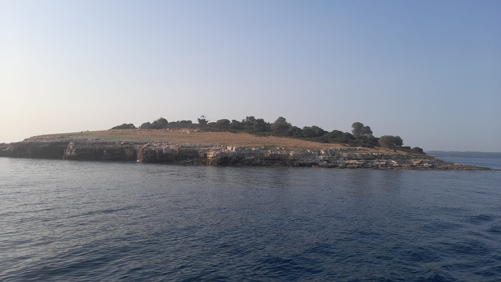
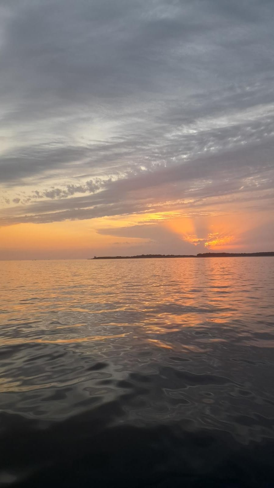
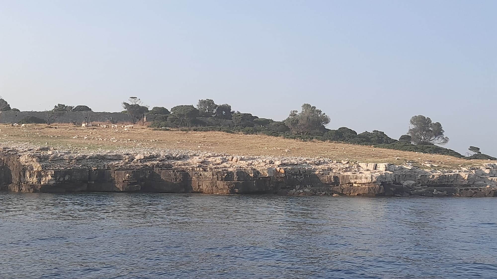
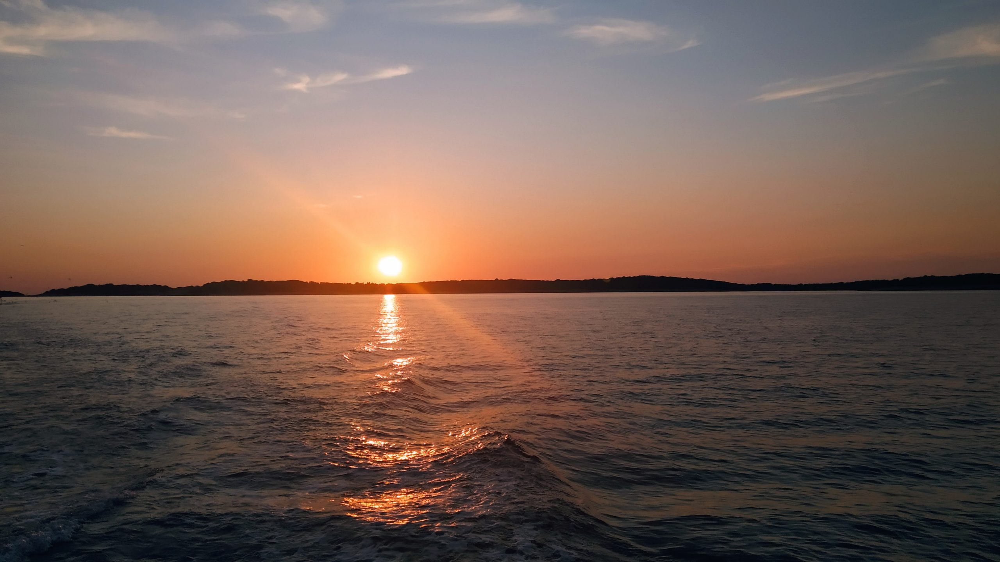

Odaberite svoj izlet
Oba izleta polaze s Rive u Puli i kruže oko brijunskog arhipelaga. Razlika je u tome kako provodite vrijeme: dnevna tura usmjerena je na dugo kupanje, a tura u zalazak sunca na večernje svjetlo.

Dnevna tura s kupanjem
12:00–16:30 · 50 € po odrasloj osobi. Panoramsko krstarenje oko Brijuna i dva sata kod Svetog Jerolima. Ukupno oko 4,5 sata, idealno za obitelji i one koji vole plivati.

Tura u zalazak sunca s dupinima
18:00–21:00 · 50 € po odrasloj osobi. Otprilike trosatno večernje krstarenje u zlatnom svjetlu, uz priliku da vidite dupine. Bez stanke za kupanje i bez ulaznice za park.
Kako protječe dnevna tura
- 12:00
Ukrcaj i polazak
Napuštamo Rivu i plovimo prema otocima.
- Krstarenje
Oko Brijuna
Polagana panoramska plovidba uz komentar vodiča.
- 2 h
Kupanje kod Svetog Jerolima
Dva sata za plivanje, ronjenje s maskom i opuštanje u bistrom moru.
- Na brodu
Obrok i piće
Riba, hamburger ili vegetarijansko jelo, uz vino, sokove i vodu.
- 16:30
Povratak na Rivu
U Pulu se vraćamo pred kraj poslijepodneva.

Kako protječe tura u zalazak sunca
Polazimo u ranu večer, plovimo oko Brijuna i tražimo dupine dok svjetlo postaje zlatno. Na palubi Vas čekaju obrok, piće i glazba, a izlet traje oko tri sata, do 21:00.

Što je uključeno
- Jedan obrok po osobi: riba, hamburger ili vegetarijansko jelo
- Neograničeno vino, sokovi i mineralna voda
- Glazba i opuštena atmosfera na brodu
- Vodič koji govori nekoliko jezika
Cijene
| Karta | Cijena |
|---|---|
| Odrasla osoba, dnevna tura | 50 € |
| Odrasla osoba, tura u zalazak sunca | 50 € |
| Djeca do 3 godine | Besplatno |
| Starija djeca | Pitajte nas |
| Ulaznica za park na Svetom Jerolimu (samo dnevna tura) | Plaća se na otoku |
Mjesto okupljanja i parkiranje
Polazimo s Rive, pokraj ACI Marine Pula. Dođite 30 minuta prije polaska. Ako dolazite automobilom, koristite plaćeno parkiralište kod Arene, odakle je do Rive kratka šetnja ravnim terenom. Aktualne cijene nalaze se na web-stranici pulskih parkirališta.